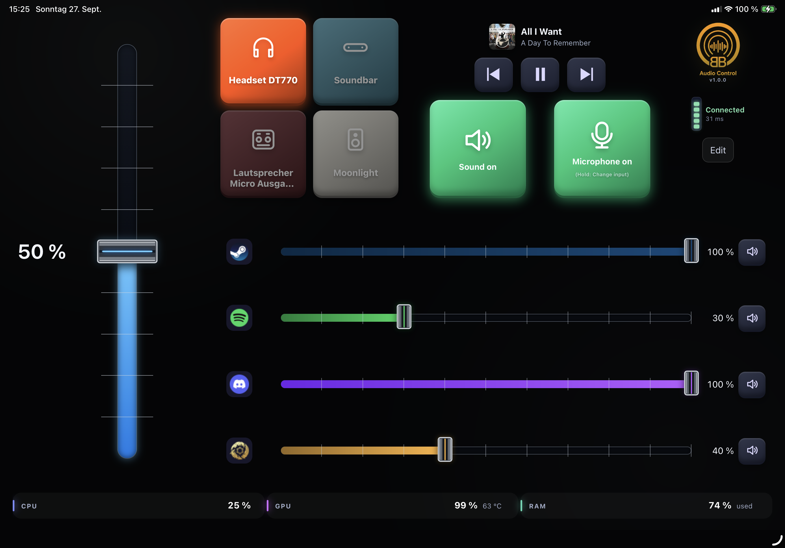
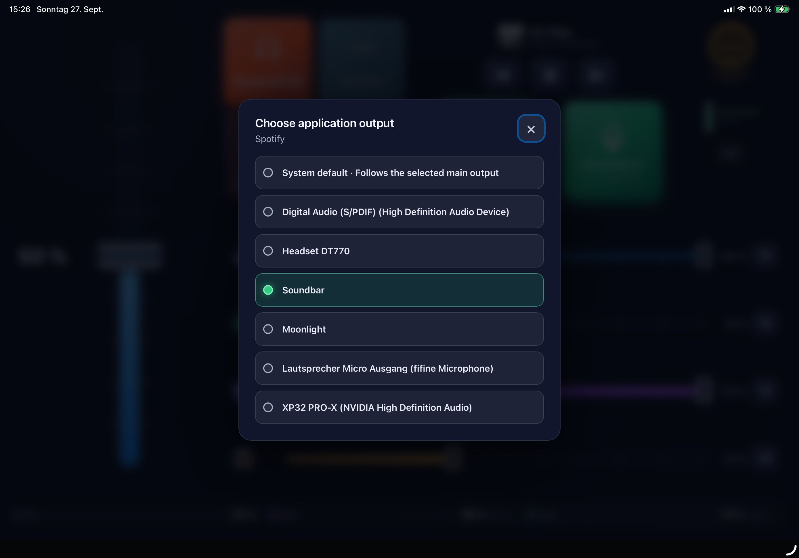
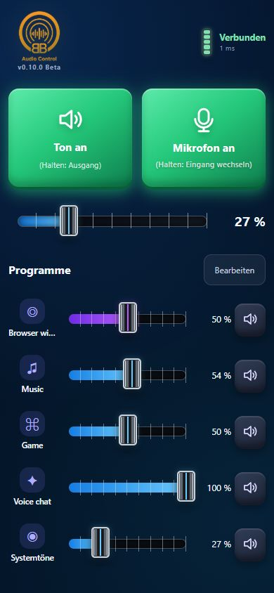
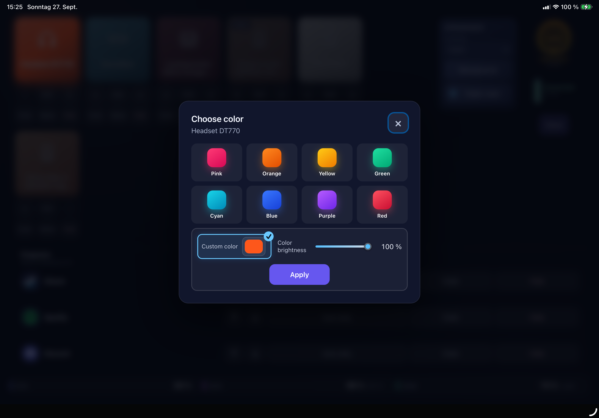

🎚️
Programme einzeln regeln
Lautstärke und Mute für bis zu fünf aktive Programme und Audioausgänge steuern.
Steuere Lautstärke, aktive Programme, Audioausgänge, Mikrofon und Medien direkt vom Tablet oder Smartphone – lokal, ohne Cloudkonto und ohne zusätzliche Hardware.
Windows 10/11 · x64 · Kostenlos · Installer derzeit nicht digital signiert

Ein vorhandenes iPad, Android-Tablet oder Smartphone wird zur übersichtlichen Fernbedienung für den Ton deines Windows-PCs.
Lautstärke und Mute für bis zu fünf aktive Programme und Audioausgänge steuern.
Den Windows-Standardausgang wechseln oder einzelnen Apps einen eigenen Ausgang zuweisen.
Mikrofon stumm schalten und den Eingang per langem Tastendruck auswählen.
Cover, Titel und Interpret sehen sowie aktive Windows-Medien pausieren oder wechseln.
Fader, Ausgänge und Hintergrund mit Farben, Helligkeit oder eigenem Bild anpassen.
Für Tablets und Smartphones im Hoch- und Querformat optimierte Bedienoberflächen.



Den aktuellen Installer auf dem Windows-PC herunterladen und ausführen.
PC und Mobilgerät im selben erreichbaren privaten Netzwerk verbinden.
Mit dem sechsstelligen Pairing-Code koppeln und sofort loslegen.
Die Steuerung läuft direkt zwischen Windows-PC und Mobilgerät. Ein Pairing-Code schützt vor unerwünschter Bedienung im Netzwerk.
BB Audio Control 1.0.0 ist kostenlos für Windows 10 und 11 verfügbar.